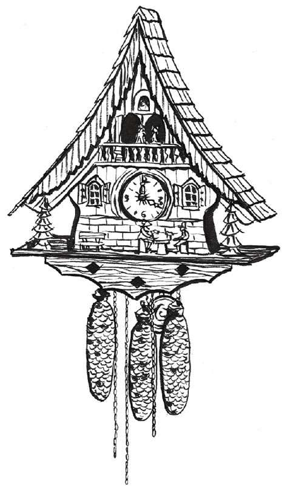

17世纪和18世纪，计时领域出现了众多创新型的计时大师，他们创造出各式各样或精细或精美，偶尔也十分怪诞的计时时钟。若想将他们一一介绍清楚，恐怕需要再另写一本书。但是有那么几位计时大师，我们必须在本书中予以介绍。
托马斯·汤皮恩被誉为“英国制表之父”。他为格林尼治天文台制造了两座“标准时钟”，使用者是英国首任皇家天文学家约翰·弗拉姆斯蒂德爵士（Sir John Flamsteed）。这两座钟十分精准，每天的误差不到2秒钟（是当时世界上最精准的钟），上一次弦即可运行一年，而且在上弦时也可以照常运行。它们在天文台发挥“校准”功能，为那里的所有其他时钟和手表，以及从附近经过的船员提供精确时间。
汤皮恩的工作室雇用了很多来自法国和荷兰的技艺精湛的胡格诺派（以制表手艺而闻名）的钟表匠，这可能就是他制造的时钟能一贯保有高品质的原因。在汤皮恩整个职业生涯中，他的工作室总共制造了5 500块腕表和650座时钟。他还首开先例为他制造的发条钟和长箱式落地钟进行编号。
乔治·格雷厄姆（George Graham）是汤皮恩最著名的门徒，最后还成为他的商业合伙人。格雷厄姆于1715年左右发明了“格雷厄姆不晃擒纵器”，是基于汤皮恩1675年建造格林尼治时钟时首次发明的擒纵器改进而成的。他还是约翰·哈里森的重要支持者，是他借给哈里森200英镑使其能有资本开始制作第一个航海钟H1。
这位法国时钟大师是一个制表家族的第5代传人，年仅13岁时就制作了第一块表。一年后，他离开家乡图尔斯（Tours）去了巴黎，在行会“艺术社会”（Société des Arts）中不断晋升。1739年，他最终成为国王路易十五的御用钟表师，又称日常钟表师（Horloger Ordinaire du Roi）。
勒·鲁瓦进行了许多机械创新，包括能极大改善腕表和时钟精确度的打簧报时机械。他为国王路易十五制作了世界上第一个可以把表盘卸掉看到内部精密结构的时钟。
在其职业生涯中，勒·鲁瓦和他的工作室共生产了约3 500块腕表，年产量约100块，而其他工作室年产量只有30~50块。法国巴黎的卢浮宫和英国伦敦的维多利亚和阿尔伯特博物馆（Victoria and Albert Museum，V&A）都收藏有他的作品。
勒·鲁瓦的儿子皮埃尔（Pierre，1717—1785）延续着这一制表王朝的辉煌。他创造了制表业三项重大革新，为现代精密时钟及航海钟的发展铺平了道路。英国钟表匠约翰·哈里森的航海钟作品给了他很大启发。这3项重大革新分别是棘爪擒纵器、温差补偿式平衡摆轮和同步游丝。
布谷鸟钟
虽然有些人认为布谷鸟钟是一个很愚蠢的发明，但它却有不少令人惊叹的前辈。古希腊数学家克特西比乌斯（Ctesibius）在公元前2世纪就制作了一个带有自动装置的猫头鹰水钟，猫头鹰会在某些时刻鸣叫并转动。公元797年，巴格达的哈伦·拉希德（Harun al-Rashid）送给查理曼大帝（Charlemagne）一个会弹出机械小鸟报时的时钟。到了14世纪，斯特拉斯堡大教堂的时钟有一个镀金的公鸡，每天中午会扇动机械翅膀并发出啼鸣。
17世纪时，只有少量时钟带有机械式布谷鸟。但18世纪德国西南部的黑森林地区涌现了一大批这种机械钟——不过到底是谁兴起了这种时尚以及为什么会成为流行，如今已无处可考。随着时间的流逝，布谷鸟钟也越发细致、精准。鉴于布谷鸟钟的大量存在，《吉尼斯世界纪录大全》（ Guinness Book of Records ）专门为它开辟了一个分类。该书记录的最大布谷鸟钟位于美国俄亥俄州的糖溪（Sugarcreek, Ohio），高23英尺（约7米），宽24英尺（约7.3米），带有一个5人乐队和一对跳波尔卡舞的夫妇，当然了，还有一个很大的布谷鸟会在每个半点及整点唱歌报时。

布谷鸟钟常用来隐喻“疯狂”，据说许多布谷鸟钟被鬼附身了。没错，被鬼附身了！曾有记载说一个布谷鸟钟在无人上发条的情况下会自己运行还非常准时，还有一个会在午夜12点时出现鬼魂般的幻影。还听说有些钟的机械布谷鸟内囚禁了一个真正布谷鸟的灵魂，会不怀好意。不过想到布谷鸟在自然界中就是一种会“鸠占鹊巢” [14] 的卑鄙鸟类，那倒也不足为奇。
在18世纪70年代，这位瑞士制表天才为怀表发明了自动上链机芯。该机芯利用怀表内部一个金属重力块的来回上下运动而实现自动上链，而金属重力块靠怀表佩戴者走路所驱动，现代的腕表依旧利用该自动原理而运行。1777年，日内瓦艺术协会做了一个测试，走路15分钟带来的动能可以让伯特莱表运行整整8天。他的另一个发明是“计步器”，可以测量走路步数和距离。今天，活力四射的步行者和跑步者对计步器十分热衷，只不过现在市面上的基本都是数字计步器。
时至今日，伯特莱品牌仍在瑞士生产奢华名表，并在其品牌营销中称自己为“自动手表的发明者”。
时间旅行锦囊
前世唤醒
请大家暂且先将怀疑态度放到一边，为自己预约一个催眠师。他们会对你进行催眠，然后你将进入昏睡状态，在皮沙发提供的舒适中你有可能会穿越到从前。
前世唤醒治疗师相信你可以恢复并再度体验从前的记忆——那些被遗忘或压抑在潜意识中的记忆，甚至还能回溯到前生，那个很早之前居住在另一个身体中的你。
就算你并不相信你在催眠状态下说的话，也会惊叹于自己想象力的丰富，以及自己奇妙而复杂的大脑深处存储的记忆宝藏。
[1] 纽伦堡为德国东南部城市，位于巴伐利亚州。
[2] 方济会是天主教托钵修会派别之一，其会士着灰色会服，又称“灰色修士”，该会提倡过清贫生活。
[3] 约翰·加尔文（John Calvin），法国著名的宗教改革家、神学家，也是新教的重要派别——归正宗的创始人。
[4] 在哥白尼于15世纪提出“日心说”之前，教会及大众一直坚信“地心说”。后来，伽利略利用望远镜观测到的实际现象成为验证“日心说”的有力证据。
[5] 查理二世的父亲查理一世统治期间，英国发生了资产阶级革命。1649年，奥利弗·克伦威尔（Oliver Cromwell）以议会和军队的名义处死国王查理一世。但由于克伦威尔实行独裁统治，其死后政局混乱。1660年，查理一世的儿子返回英国登上王位，称查理二世，史称斯图亚特王朝复辟。
[6] 敌基督者是以假冒基督的身份来暗地里敌对或意图取缔真基督的人物。
[7] 计算机2000年问题，又叫作“电脑千年虫问题”，缩写为“Y2K”。在某些使用了计算机程序的智能系统（包括计算机系统、自动控制芯片等）中，由于其中的年份只使用两位十进制数来表示，因此当系统进行（或涉及）跨世纪的日期处理运算时（如多个日期之间的计算或比较等），就会出现错误的结果，进而引发各种各样的系统功能紊乱甚至崩溃。因此从根本上说“千年虫”是一种程序处理日期上的bug（计算机程序漏洞），而非病毒。
[8] 皇家天文学家是英国授予皇家格林尼治天文台台长的头衔。
[9] 20英尺约6.096米。
[10] 节选自本诗译者张杰的博客http://blog.sina.com.cn/s/blog_5709ffc401000782.html。
[11] 该实验室位于萨里郡（Surrey）的特丁顿（Teddington）。
[12] 290万英镑约合人民币2 900万元。
[13] 经线也称子午线，和纬线一样是人类为度量方便而假设出来的辅助线，定义为地球表面连接南北两极的大圆线上的半圆弧。
[14] 某些布谷鸟属于巢寄居鸟，将卵产在其他鸟的巢中，由义亲代为孵化和育雏。布谷鸟常在产卵前把宿主一枚卵移走，或全部推出巢外，迫使宿主重新产卵。而一旦巢寄生的雏鸟孵出，它有将义亲的雏鸟推出巢外的习性，从而独享义亲抚育，这样宿主的繁殖成功率将降低。